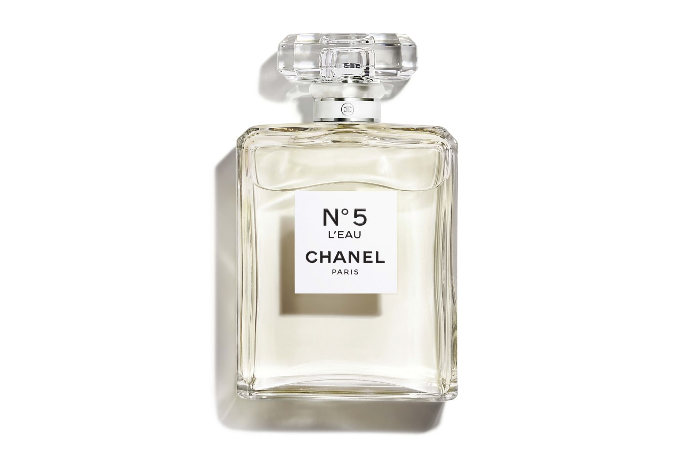

Channel N5
- Nhóm nước hoa: Hương hoa cỏ An-Đê-Hít
- Giới tính: Nữ
- Độ tuổi khuyên dùng: Trên 25
- Năm ra mắt: 1921
- Nồng độ: EDT, EDP, EDC
- Nhà pha chế: Ernest Beaux
- Độ lưu hương: Rất lâu - Trên 12 giờ
- Độ toả hương: Gần - Toả hương trong vòng một cánh tay
- Thời điểm khuyên dùng: Ngày, Đêm, Xuân, Hạ, Thu, Đông
- Phong cách: Cổ điển , Sang trọng , Quyến rũ